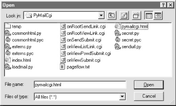

| I l@ve RuBoard |
|
13.2 The PyMailCgi Web SiteNear the end of Chapter 11, we built a program called PyMailGui that implemented a complete Python+Tk email client GUI (if you didn't read that section, you may want to take a quick look at it now). Here, we're going to do something of the same, but on the Web: the system presented in this section, PyMailCgi, is a collection of CGI scripts that implement a simple web-based interface for sending and reading email in any browser. Our goal in studying this system is partly to learn a few more CGI tricks, partly to learn a bit about designing larger Python systems in general, and partly to underscore the trade-offs between systems implemented for the Web (PyMailCgi) and systems written to run locally (PyMailGui). This chapter hints at some of these trade-offs along the way, and returns to explore them in more depth after the presentation of this system. 13.2.1 Implementation OverviewAt the top level, PyMailCgi allows users to view incoming email with the POP interface and to send new mail by SMTP. Users also have the option of replying to, forwarding, or deleting an incoming email while viewing it. As implemented, anyone can send email from the PyMailCgi site, but to view your email, you generally have to install PyMailCgi at your own site with your own mail server information (due to security concerns described later). Viewing and sending email sounds simple enough, but the interaction involved involves a number of distinct web pages, each requiring a CGI script or HTML file of its own. In fact, PyMailCgi is a fairly linear system -- in the most complex user interaction scenario, there are six states (and hence six web pages) from start to finish. Because each page is usually generated by a distinct file in the CGI world, that also implies six source files. To help keep track of how all of PyMailCgi's files fit into the overall system, I wrote the file in Example 13-1 before starting any real programming. It informally sketches the user's flow through the system and the files invoked along the way. You can certainly use more formal notations to describe the flow of control and information through states such as web pages (e.g., dataflow diagrams), but for this simple example this file gets the job done. Example 13-1. PP2E\Internet\Cgi-Web\PyMailCgi\pageflow.txtfile or script creates
-------------- -------
[pymailcgi.html] Root window
=> [onRootViewLink.cgi] Pop password window
=> [onViewPswdSubmit.cgi] List window (loads all pop mail)
=> [onViewListLink.cgi] View Window + pick=del|reply|fwd (fetch)
=> [onViewSubmit.cgi] Edit window, or delete+confirm (del)
=> [onSendSubmit.cgi] Confirmation (sends smtp mail)
=> back to root
=> [onRootSendLink.cgi] Edit Window
=> [onSendSubmit.cgi] Confirmation (sends smtp mail)
=> back to root
This file simply lists all the source files in the system, using => and indentation to denote the scripts they trigger. For instance, links on the pymailcgi.html root page invoke onRootViewLink.cgi and onRootSendLink.cgi, both executable scripts. The script onRootViewLink.cgi generates a password page, whose Submit button in turn triggers onViewPswdSubmit.cgi, and so on. Notice that both the view and send actions can wind up triggering onSendSubmit.cgi to send a new mail; view operations get there after the user chooses to reply to or forward an incoming mail. In a system like this, CGI scripts make little sense in isolation, so it's a good idea to keep the overall page flow in mind; refer to this file if you get lost. For additional context, Figure 13-1 shows the overall contents of this site, viewed on Windows with the PyEdit "Open" function. Figure 13-1. PyMailCgi contentsThe temp directory was used only during development. To install this site, all the files you see here are uploaded to a PyMailCgi subdirectory of my public_html web directory. Besides the page-flow HTML and CGI script files invoked by user interaction, PyMailCgi uses a handful of utility modules as well:
PyMailCgi also reuses parts of the pymail.py and mailconfig.py modules we wrote in Chapter 11; on my web server, these are installed in a special directory that is not necessarily the same as their location in the examples distribution (they show up in another server directory, not shown in Figure 13-1). As usual, PyMailCgi also uses a variety of standard Python library modules: smtplib, poplib, rfc822, cgi, urllib, time, rotor, and the like.
13.2.2 Presentation OverviewPyMailCgi is a challenge to present in a book like this, because most of the "action" is encapsulated in shared utility modules (especially one called commonhtml.py ); the CGI scripts that implement user interaction don't do much by themselves. This architecture was chosen deliberately, to make scripts simple and implement a common look-and-feel. But it means you must jump between files to understand how the system works. To make this example easier to digest, we're going to explore its code in two chunks: page scripts first, and then the utility modules. First, we'll study screen shots of the major web pages served up by the system and the HTML files and top-level Python CGI scripts used to generate them. We begin by following a send mail interaction, and then trace how existing email is processed. Most implementation details will be presented in these sections, but be sure to flip ahead to the utility modules listed later to understand what the scripts are really doing. I should also point out that this is a fairly complex system, and I won't describe it in exhaustive detail; be sure to read the source code along the way for details not made explicit in the narrative. All of the system's source code appears in this section (and also at http://examples.oreilly.com/python2), and we will study the key concepts in this system here. But as usual with case studies in this book, I assume that you can read Python code by now and will consult the example's source code for more details. Because Python's syntax is so close to executable pseudocode, systems are sometimes better described in Python than in English. |
| I l@ve RuBoard |
|